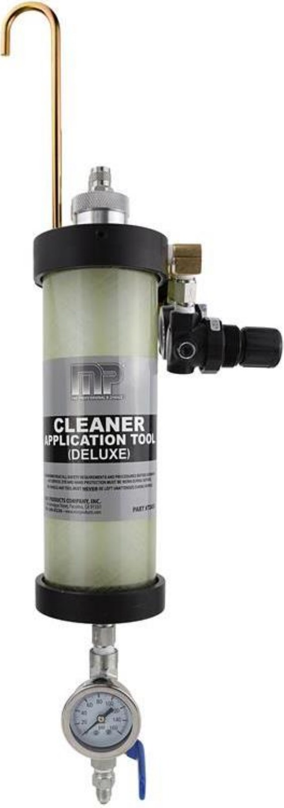

Doc no. MOC-TSB-26-01 // Vol. 26 No. 01 // Jun 9, 2026 // Fuel
Cleaner Application Tool (CAT Tool)
New72490
A new Cleaner Application Tool with an updated, modern design. It replaces the previous models, 72450 and 72480.
What's new
You can see the fluid level in the tank throughout the cleaning service, for better control and consistent application.
Key benefits
- Fluid level visible throughout the service
- Updated ergonomic, streamlined design
- Easier to use during operation
- Lighter weight
Contact
For more information, contact the Machine & Equipment Department at 866.244.6621.

Part numbers
| Part No. | Description | Notes |
|---|---|---|
| 72490 | Cleaner Application Tool (CAT Tool) | Replaces 72450 and 72480 |